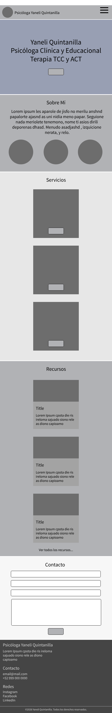
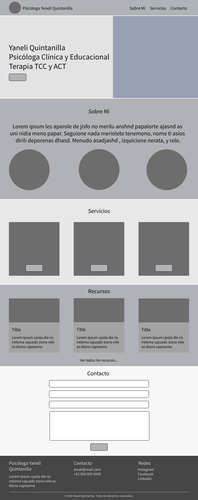

WDD231: Final Project Site Plan
This document is intended to define the structure, design and content of the final project.
Site Name
The name of the site will be Psicóloga Yaneli Quintanilla. The name represents the profession of a psychologist.
Optional domain availability: psicoyane.com
Site Purpose
The site provides information about a psychologist and her services. Also a blog with information about relevant topics of psychology. The purpose is also to convert leads into clients, allowing them to submit a form with their contact information for future follow up.
Scenarios
- What types of therapy or services does the psychologist provide?
- Are the sessions online or on-site?
- How can I set an appointment?
- Can I read articles about anxiety or stress to understand what I feel?
- What are her credentials?
- Does she handle issues related to relationships / children / depression / anxiety?
Color Scheme
The color palette looks to provide a sense of trust and calm, and relaxation.
| Color | Sample | HEX | Usage |
|---|---|---|---|
| Slate Blue | #8E9AAF | Heading and navigation | |
| Sage Green | #A7BFA3 | Accents and buttons | |
| Warm Ivory | #EDEAE3 | Page background | |
| White | #FFFFFF | Cards | |
| Dark Slate | #2F3A46 | Body text |
Typography
- Fraunces (serif) — headings and site name
- Figtree (sans-serif) — body text and navigation
Wireframes

